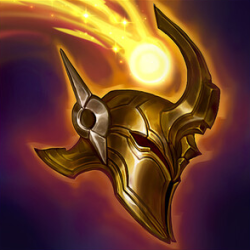

Desde cedo, ele sabia que estava destinado à batalha. Ele treinou para se juntar aos Ra’Horak, a ordem militar dos Rakkor. Sem nunca ser o mais forte nem o mais habilidoso dos guerreiros, de alguma forma Atreus conseguiu perseverar, reerguendo-se, ensanguentado e ferido, batalha após batalha.

02 Fev 2010